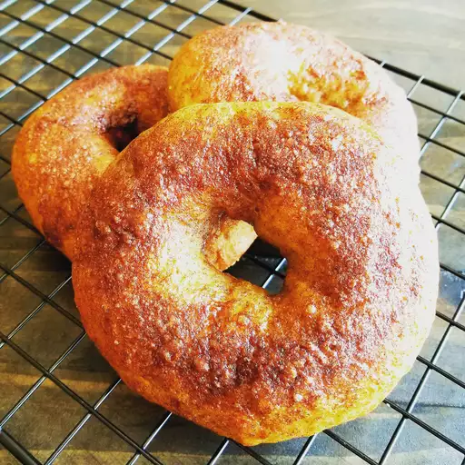

Bagel

These simple bagels have a wonderful cinnamon and pumpkin flavor.
Making bagels is fun, but it is a little bit of work. Follow our signature recipe for the perfect texture and flavor.
Ingredients
- 1 (.25 ounce) envelope active dry yeast
- ⅔ cup warm water (110 degrees F/45 degrees C)
- ¾ cup canned pumpkin
- ⅓ cup packed brown sugar
- 1 ½ teaspoons ground cinnamon
- 1 teaspoon salt
- ¾ teaspoon ground nutmeg
- ½ teaspoon ground allspice
- ½ teaspoon ground cloves
- 3 cups all-purpose flour, or more as needed
- 1 tablespoon cornmeal
- 6 cups water, or more as needed
- 1 teaspoon white sugar
- cooking spray
Steps
- Dissolve yeast in warm water in a large bowl; add pumpkin, brown sugar, cinnamon, salt, nutmeg, allspice, and cloves and
mix well. Stir in enough flour to make a soft dough. Turn dough onto a work surface and knead by hand 6 to 8 minutes or
mix in a stand mixer. Transfer dough to a greased bowl, cover with a damp towel, and let rise in a warm place until
doubled in size, about 1 hour.
- Punch dough down and divide into 8 balls. Poke a hole in the middle of each ball using your finger to create a bagel
shape. Arrange bagels on a baking sheet and let rise, 10 to 15 minutes.
- Fill a large pot with 6 cups water and white sugar and bring to a boil. Slightly flatten the bagels and drop a couple at
a time into the boiling water; cook for 1 1/2 minutes. Flip bagels and boil for another 1 1/2 minutes; remove with a
slotted spoon and dry on a clean towel. Repeat with remaining bagels.
- Preheat oven to 400 degrees F (200 degrees C). Spray a baking sheet with cooking spray and sprinkle cornmeal on the
sheet. Arrange bagels on the baking sheet about 2 inches apart.
- Bake in the preheated oven until cooked through, 25 to 30 minutes.